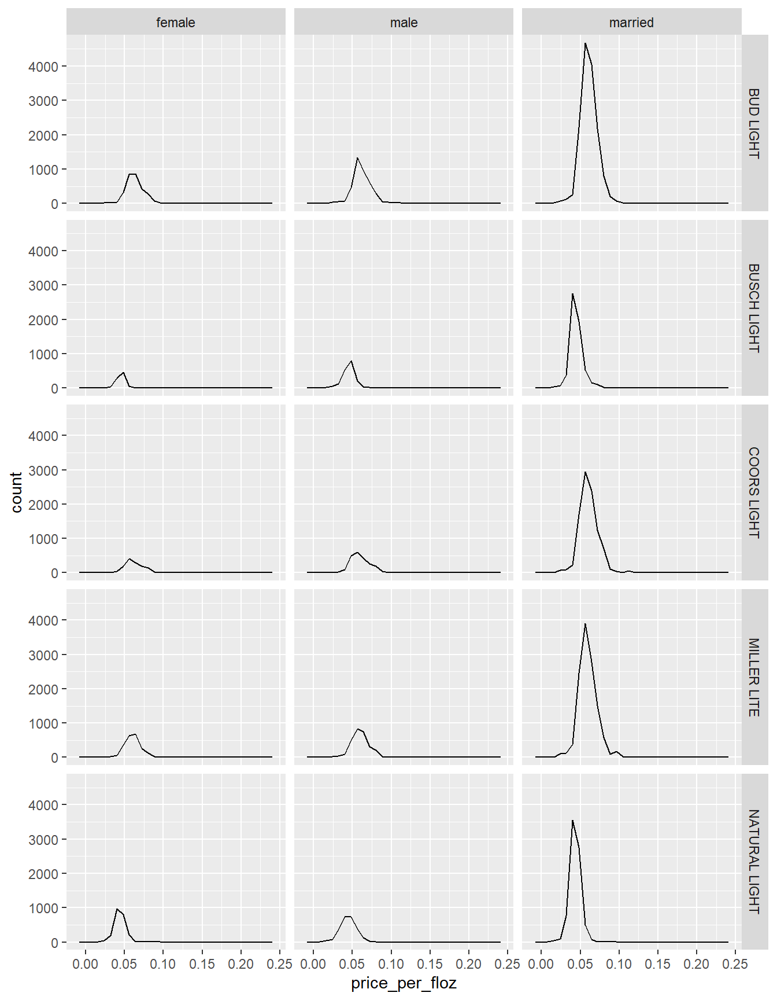

Many adults in the United States consume Beer regularly. That being said, Businesses can make better economic decisions based on collected data about the beer markets and consumer demographics to improve upon their business, which will hopefully increase their profitability and decrease their costs. This analysis will provide the viewer with important information relating to how different demographics of individuals in different parts of the United States consume beer.
Our project aims to point out consumer trends in the beer market based on real market data and visualizations. We will analyze how various demographic characteristics such as race, age, marital and perental status as well as geographic location affect one’s consumption of beer.
Exploratory Data Analysis
library(tidyverse)
── Attaching core tidyverse packages ──────────────────────── tidyverse 2.0.0 ──
✔ dplyr 1.1.4 ✔ readr 2.1.5
✔ forcats 1.0.0 ✔ stringr 1.5.1
✔ ggplot2 3.4.4 ✔ tibble 3.2.1
✔ lubridate 1.9.3 ✔ tidyr 1.3.1
✔ purrr 1.0.2
── Conflicts ────────────────────────────────────────── tidyverse_conflicts() ──
✖ dplyr::filter() masks stats::filter()
✖ dplyr::lag() masks stats::lag()
ℹ Use the conflicted package (<http://conflicted.r-lib.org/>) to force all conflicts to become errors
Rows: 73115 Columns: 25
── Column specification ────────────────────────────────────────────────────────
Delimiter: ","
chr (14): _purchase_desc, brand, container, market, state, buyertype, income...
dbl (5): hh, quantity, dollar_spent, beer_floz, price_per_floz
lgl (6): promo, childrenUnder6, children6to17, microwave, dishwasher, singl...
ℹ Use `spec()` to retrieve the full column specification for this data.
ℹ Specify the column types or set `show_col_types = FALSE` to quiet this message.
view(beer_markets)
Question 1:
What beer do consumer prefer based on their State of residence? The following is a visualization of our answer, followed by some analysis and key takeaways.
ggplot(beer_markets, aes(y = state, fill = brand)) +geom_bar(position ="dodge")
According to the visualization, natural light beer is the most popular type of beer in Florida which is also the state that sells the most beer. That being said, Bud Light is the most popular beer by far in states like Ohio and Missouri. Moreover, Miller Light is a very popular beer in Wisconsin, Texas, Illinois, and Tennessee. Coors Light is the most popular beer in New York, New Jersey, and Pennsylvania. Lastly, Busch Light is the most popular beer in Iowa and North Dakota. We also noticed the beer in general isn’t very popular in places like Washington DC and Delaware.
Question 2:
Which states consume the most beer? The following visualization shows the top 10 states in the US based on their total fluid consumption of beer.
# THIS IS THE ONE (TOP 10 STATES BY QUANTITY OF BEER)beer_by_state <- beer_markets |>group_by(state) |>summarize(total_beer =sum(beer_floz) ) |>arrange(-total_beer) |>slice_head(n =10)
According to the visualization, Florida consumes the most beer per year with approximately 2.2 million fluid ounces of beer consumed per year in Florida, followed by approximately 1.9 million fluid ounces of beer consumed in Texas per year, and 1.5 million fluid ounces of beer consumed in California per year. These figures are much higher in these states than in states like Arizona and Indiana placed 9th and 10th respectively for states with the highest beer consumption in fluid ounces per year. in Arizona and Indiana, approximately 350,000 fluid ounces of beer are consumed each year.
Question 3:
How does the distribution of dollars spent on beer vary by buyer type and race?
ggplot(beer_markets,aes(y = race, x =log10(dollar_spent))) +geom_boxplot() +facet_wrap(~buyertype)
First off, for single females on average Hispanics spent the most on beer followed by Asian and White women, then black women, and Women from other races on average spent the least on beer. For single males, Asians on average spend the most on beer followed by white males, then Hispanic males and single males of other races, with black single males on average spending the least on beer. For married individuals, Asian and white individuals spent on average the most on beer, followed closely by Hispanic and other races, and lastly, black married individuals on average spent the least on beer.
Question 4:
What brands of beer are most popular by age group?
Overall, beer consumption for every brand seems to be at its highest for individuals 50 years and older, and the lowest is for those under the age of 30 years old, with beer consumption increasing also from 30-39 to 40-49. For all age groups, the most popular brand of beer was Bud Light and the least popular brand of beer was Busch Light.
Question 5:
How much does the average person spend on beer per fluid ounce based on their marital status, gender & brand?
# How much beer does the average person purchase spend based on their marital status and gender & brandggplot(beer_markets, aes(x = price_per_floz)) +geom_freqpoly() +facet_grid(brand~buyertype)
`stat_bin()` using `bins = 30`. Pick better value with `binwidth`.

According to visualization, single women tend to consume the least amount of beer across all brands except for natural light, where women consume slightly a little bit more than men. Single individuals will consume anywhere from 500 to 1000 fluid ounces per year of beer, while married couples will consume anywhere from 3000 to 4500 fluid ounces of beer per year. Moreover, Natural Light and Busch Light seems to be the least expensive beers per fluid ounce, while Miller Light, Coors Light, and Bud Light seem to be the most expensive beers per fluid ounce.
Question 6:
Does the age of one’s children have an influence on the amount of beer they consume?
Warning: The following aesthetics were dropped during statistical transformation: fill
ℹ This can happen when ggplot fails to infer the correct grouping structure in
the data.
ℹ Did you forget to specify a `group` aesthetic or to convert a numerical
variable into a factor?
Warning: The following aesthetics were dropped during statistical transformation: fill
ℹ This can happen when ggplot fails to infer the correct grouping structure in
the data.
ℹ Did you forget to specify a `group` aesthetic or to convert a numerical
variable into a factor?
This visualization illustrates how many fluid ounces of beer parents with children under 6 years old consume, and how many fluid ounces of beer parents with children between 6 and 17 years old consume. That being said, these two visualizations show that parents with children under 6 only drink 5000 fluid ounces of beer per year collectively, while parents with children between 6 and 17 years old consume approximately 15000 fluid ounces. This 10000 difference in fluid ounces consumed by these two slightly different demographic spheres of beer consumers suggests that people with younger children prefer to drink less beer than consumers with older children.
Question 7:
In what States do people consume canned beer most and least?
According to the data frame Florida with 7795 cans, Texas with 7781 cans, and California with 5036 cans are the top 3 states where consumers drink the most canned beer. On the other hand, District of Columbia with 13 cans, Wyoming with 42 cans, and Delaware with 88 cans are the 3 states with where consumers drink the least amount of canned beer.
Significance of The Project
The significance of this project lies in its potential implications for various real-world applications particularly within the realms of business strategies and Public Policy.
Business Strategies: By understanding which types of beer are preferred in different states, companies can tailor their product offerings and marketing strategies to better meet consumer demand. For example, knowing that Bud Light is the most popular beer in certain states like Ohio and Missouri can inform breweries and distributors where to focus their promotional efforts and distribution channels. Additionally, insights into consumer demographics such as age, marital status, and parental status can help businesses refine their target segmentation and develop targeted advertising campaigns.
Public Policy: The findings of this project can also inform public policy decisions related to alcohol consumption and regulation. Understanding which states consume the most beer can guide policymakers in implementing effective strategies to address issues such as alcohol abuse and drunk driving. For instance, states with higher rates of beer consumption may need to allocate more resources towards enforcement of alcohol-related laws and prevention programs. Furthermore, insights into demographic variations in beer consumption, such as differences based on race and marital status, can inform public health initiatives aimed at reducing alcohol-related harm within specific population groups.
Overall, this project serves as a valuable tool for stakeholders in both the private and public sectors to make informed decisions and develop strategies that promote responsible alcohol consumption and support the economic viability of businesses within the beer industry.